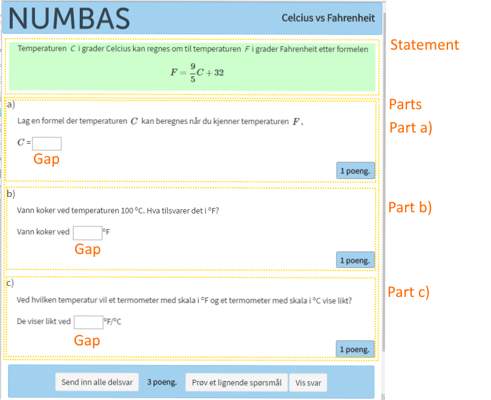

Oppgaver
Oppgavetyper
Foreløpig
Numbas tilbyr en rekke oppgavetyper,
| Type | Brukes til |
|---|---|
| Information only | Brukes til opplysninger, henter ikke inn svar. |
| Gap-fill | Spørsmål med en eller flere felter for inntasting av svar. |
| Mathematical expression | Algebraiske svar, inntasting tolkes fortløpende. |
| Number entry | Henter tallsvar innenfor et område eller med gitt presisjon |
| Matrix entry | Henter tallsvar for hver celle i matrisen. |
| Match text pattern | Tekstsvar som må oppfylle et gitt tekstmønster. |
| Choose one from a list | Velg ett alternativ fra en liste med alternativer. |
| Choose several from a list | Velg ett eller flere alternativer fra en liste. Kan angi min/max antall. |
| Match choices with answers | 2D tabell,velg ett eller flere alternativer som hører sammen. |
Av de mange oppgavetypene i Numbas vil vi i dette kurset konsentrere oss om
- Mathematical expression
- Number entry
Et typisk spørsmål
Et spørsmål består normalt av en innlednig i Statement som kan introdusere oppgaven. Deretter følger spørsmålet i Parts som kan være inndelt i delspørsmål, Part a), Part b),. Spørsmålsteksten tastes inn som Prompt. Svarene tastes inn i Gaps som settes inn i oppgaveteksten.

De tre Parts i spørsmålet ovenfor er av av typen Gap-fill, der det første Gap er satt til å hente inn svar som Mathematical expression. De to siste Gaps henter inn svar som Number entry. I hvert delspørsmål kan det settes inn et Step som brukes til å gi hint om hvordan oppgaven kan løses.
Mathematical expression
Brukes til spørsmål som har algebraiske uttrykk som svar. Svarene tastes inn på enlinje form og JME/LaTeX tolker svaret fortløpende som matematisk uttrykk.
Svarene evalueres ved å sette inn tilfeldige verdier i et område for variablene i svaruttrykket og i fasituttrykket og hvis uttrykkene beregnes som like blir svaret evaluert som riktig. Det er mulig å spesifisere nøyaktighet, testverdier og antall beregninger som skal sammenfalle.
Dette betyr at en student i prinsippet kan svare med uttrykket i spørsmålet hvis det dreier seg om forenkliger og omforminger. Før svaret evalueres blir overflødige parenteser og andre tegn fjernet. Ved siden av evaluering kan det settes krav til at svaret har lengde innenfor et gitt område eller at det inneholder eller ikke inneholder visse bokstavtegn. Det kan være problematisk å finne restriksjoner som garanterer at svaret er forenklet mest mulig. Det arbeides med en forbedring av dette.
Number entry
Brukes til spørmål med tallsvar. Tall kan enten spesifiseres som heltall eller desimaltall innenfor et gitt tallområde, eller med nøyaktighet satt som antall desimaler etter komma eller med antall gjeldende siffer. Det kan også settes at svar kan tastes inn som heltallsbrøker og at fasitsvar skal vises som brøk.
The structure of a question
Numbas dokumentasjon:
Questions
Cheatsheet
Eksamen
En eksamen settes sammen av oppgaver som er laget og testet. Før du går i gang med å sette sammen en eksamen bør du derfor bla igjennom hvert spørsmål som du vil ha med og legge disse i en Basket.
Start med Create a new exam og fyll ut Name og Project som den skal tilhøre. Lag også en liten Description, sett Tags og velg passende fag/emne. Åpne så fanen Questions og velg Basket under Add questions to this exam. Du kan også bla opp de siste spørsmålene du arbeidet med, eller søke etter spørsmål.
Det opprettes en liste med de spørsmålene du legger til. Der kan du redigere spørsmålene, erstatte spørsmålet med en kopi, eller testkjøre de enkelte spørsmålene. Rekkefølgen kan endres ved å dra spørsmålene opp eller ned i lista, eller du kan velge tilfeldig rekkefølge.
En eksamen bør testkjøres av deg eller andre før du eventuelt legger den i den åpne databasen. Hvis du i Settings har fylt ut Name og Description og valgt lisens kan du så under fanen Access velge Publish - og din eksamen er delt med andre.
Standalone eller SCORM
Eksamen og enkeltoppgaver i Numbas er komplette nettsider som inneholder spørsmål og et system som gir tilbakemelding. Numbas editor server kan brukes til å testkjøre oppgaver under redigeringen, men til bruk i skolesammenheng må oppgavene først lastes ned fra Numbas editor server og deretter lastes opp til et LMS eller en annen egnet filserver. Oppgaver i Standalone format kan brukes via en link i nettvennlig undervisningsmateriell.
Oppgavene lastes ned under fanene Download i Standalone format hvis de skal brukes uten å gi status tilbake til et LMS, eller som SCORM pakke hvis oppgavene skal brukes i et LMS som følger SCORM standard. I begge tilfeller blir oppgavene samlet til en zipfil.
Et tredje alternativ til nedlasting er som source, det vil si en fil som inneholder bare oppgavetekst, fasit, svarforslag og noe metadata. En slik fil kan lastes opp til editor server og redigeres videre.
GitHub eller Dropbox
Som alternativ til egen filserver kan GitHub eller Dropbox brukes til å levere Standalone oppgaver til studentene. Begge systemer tillater at nettsider er tilgjengelige for alle via en link. Det ligger utenfor rammen til dette kurset å gå igjennom detaljer om mulighetene, men hvis du vil eksperimentere selv kan du få god starthjelp hos
GitHub - Websites for you and your projects
Dropbox